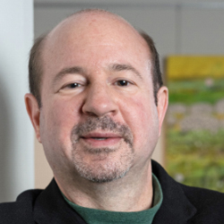
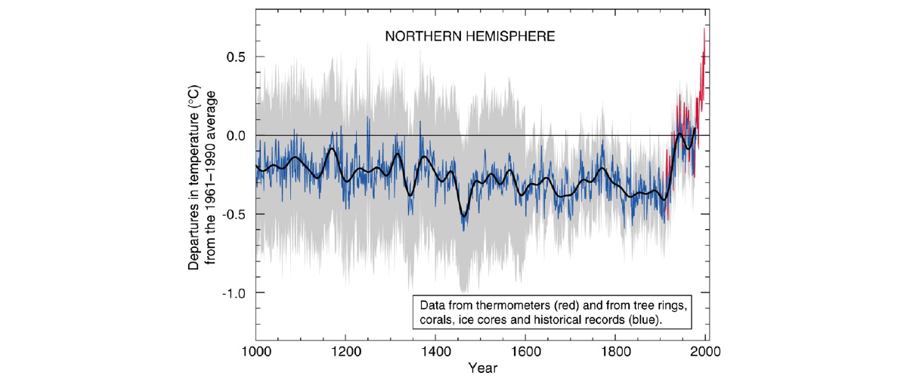
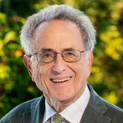
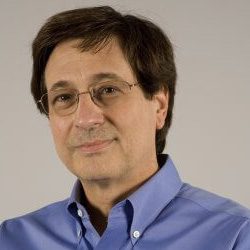
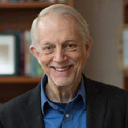
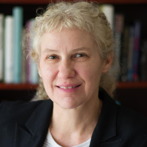

Recent Recipients
2019-2023
Michael E. Mann, PhD (2023)
Presidential Distinguished Professor, Department of Earth and Environmental Science, University of Pennsylvania
For scientific understanding of historic climate change based on the temperature record of the past thousand years, and distinguished contributions to the public’s understanding of climate science and ways to mitigate climate change.
Michael E. Mann is a climate scientist, geophysicist and science communicator. He is the director of the Center for Science, Sustainability & the Media at the University of Pennsylvania. Mann has contributed to the scientific understanding of historic climate change and potential future climate changes. He has pioneered techniques to find patterns and signals in climate and paleoclimate data. Mann is perhaps best known for his reconstruction of large-scale temperature changes over the past 1,000 years which was dubbed the "hockey stick" because of its shape.
Mann and collaborators reconstructed ancient temperature patterns from paleoclimatic data sets such tree rings, ice cores and corals. The curve shows modest variations until the 20th century, when it shoots up, like the upturned blade of a hockey stick. The hockey stick became an iconic symbol of human-caused warming and a focal point in fractious debate over climate change and what to do about it. Mann is author of more than 200 peer-reviewed and edited publications. He has also published six books: Dire Predictions: Understanding Global Warming (2008), The Hockey Stick and the Climate Wars: Dispatches from the Front Lines (2012, with Tom Toles), The Madhouse Effect: How Climate Change Denial Is Threatening Our Planet, Destroying Our Politics, and Driving Us Crazy (2016, with Megan Herbert), The Tantrum That Saved the World (2018), The New Climate War: The Fight to Take Back Our Planet (2021), and most recently, Our Fragile Moment: How Lessons from the Earth’s Past Can Help Us Survive the Climate Crisis (2023). Mann is a co-founder and contributor to the climate science blog RealClimate. Mann was selected by Scientific American as one of the fifty leading visionaries in science and technology in 2002, was awarded the Hans Oeschger Medal of the European Geophysical Union in 2012. He made Bloomberg News' list of fifty most influential people in 2013. He has received the Friend of the Planet Award from the National Center for Science Education, the Stephen H. Schneider Award for Outstanding Climate Science Communication from Climate, the Award for Public Engagement with Science from the AAAS, the Climate Communication Prize from the American Geophysical Union. He received the Tyler Prize for Environmental Achievement 2019 and was elected to the National Academy of Sciences in 2020. In 2022, he was awarded the Leo Szilard Lectureship by APS "for distinguished contributions to the public's understanding of climate science controversies, and to how our individual and collective actions can mitigate climate change”. He was named Humanist of the Year by the American Humanist Association in 2023. Mann is a Fellow of the AGU, AMS, GSA, AAAS and the Committee for Skeptical Inquiry. He is co-founder of the award-winning science website RealClimate.org. Mann has continued his forays into climate research, focusing on other topics such as the impact of climate change on extreme weather events, hurricanes and human health.
Robert Socolow, PhD (2023)
Professor Emeritus
For singular thought leadership pioneering new concepts and creating new fields in energy and the environment, specifically addressing energy efficiency, carbon capture and sequestration, and climate stabilization strategies.
Robert Socolow has contributed new concepts and innovations in energy and the environment for more than 50 years. A Professor in Princeton’s Department of Mechanical and Aerospace Engineering since 1971, he has led interdisciplinary programs focused initially on energy flows and energy efficiency, then on carbon flows and solutions to climate change. His formative years were as a theoretical nuclear physicist in the early days of quarks (Ph.D., Harvard, 1964; junior faculty, Yale, 1966-71). His goal (carried over from physics) is to create simplified descriptions that capture a problem’s essence. He seeks fresh perspectives that encourage consensus-building. His perspective is planetary. Professor Socolow led the first multi-disciplinary field study of residential energy use. Mechanical engineers, architects, statisticians, and behavioral psychologists investigated a community (Twin Rivers, NJ) with hundreds of identical units, opening up a field that led to high-performance windows, lighting, heating, ventilating, air conditioning, and appliances. With Ted Taylor, Professor Socolow conducted the first field study of seasonal storage of ice, made in winter by snow machines and used in summer to cool a commercial building. Professor Socolow pioneered the field of industrial ecology and zeroed in on the circular planetary economy for carbon: extracted in fossil fuel, captured as CO2 at centralized facilities, and returned to geological formations. His most cited paper, with ecologist Stephen Pacala, introduced the “stabilization wedge” to quantify climate solutions, pointing the way to ambitious global targets for future emissions. He also warned that an ammonia economy could adversely affect the global nitrogen cycle, and he quantified the environmental impacts of wealthy individuals in poor countries. With John Harte, Professor Socolow co-edited Patient Earth (Holt, Rinehart, l97l), one of the first college textbooks in environmental studies. He was the editor of Annual Review of Energy and the Environment, 1992-2002. He led the production of and co-authored five “energy technology distillates” on individual low-carbon options, addressed to the quantitative non-specialist. He served on the Board of Directors of the National Audubon Society, the Deutsche Bank Climate Change Advisory Board, and the Strategic Advisory Board of Lawrence Berkeley National Laboratory. He chaired the Panel on Public Affairs of the American Physical Society. For 20 years he directed the Princeton’s Center for Energy and Environmental Studies, and for 19 years he co-chaired the University’s Carbon Mitigation Initiative, funded by BP. He currently serves on the Science and Security Board of the Bulletin of the Atomic Scientists and on the National Academy of Sciences Advisory Board to the U.S. Global Change Research Program. Professor Socolow is a member of the American Academy of Arts and Sciences, a Lifetime Associate of the National Research Council of the National Academies, a fellow of the American Physical Society, and a fellow of the American Association for the Advancement of Science.
Barry Arkles, PhD (2022)
President and Founder, Catemer Inc
For developing organosilicon materials and organometallic and biochemical reagents for use as contact lens materials, heat shield coatings on space shuttles, and super strong light plastics.
Barry Arkles is a synthetic chemist, inventor, and entrepreneur residing in the Philadelphia area. He received his BS (1970) and PhD (1976) in chemistry from Temple University. He has founded three companies with the goals of developing new methods for synthesizing organosilicon and organometallic materials with specific properties and commercializing these materials for industrial applications. He has published more than 150 scientific papers and has been awarded more than 75 US patents. Dr. Arkles received the American Chemical Society’s Stanley Kipping Award for Silicon Chemistry in 2020. In 2021 he was elected to the National Academy of Engineering with the citation “for contributions to organosilicon materials and organometallic and biochemical reagents.” He was elected a Fellow of the British Royal Society of Chemistry in 2013. Dr. Arkles developed a synthetic approach for a key monomer for contact lens materials based on a new pathway and new catalytic method known as T2. Other variations of this monomer were used later, and eventually Arkles developed functionalized siloxane macromers by terminating living anionic ring-opening polymerization (AROP) with a functional chlorosilane. This approach was utilized by DuPont for Group Transfer Polymerization (GTP) and was later introduced to the Vistakon division of Johnson and Johnson. The macromer was found to have the structural control necessary to form silicone-hydrogels and resulted in the first silicone hydrogel (soft lens) product introduced to market, Acuvue. Similar technology was introduced by Sauflon/CooperVision as the Clariti Lens. Analogous technology based on AROP but built from silahydrocarbons was introduced by Bausch & Lomb as the Ultra lens. Today, more than 70% of all contact lenses utilize macromer technology developed by Barry Arkles and coworkers at the company he founded, Gelest Inc. Other impactful discoveries and inventions of Dr. Barry Arkles are silicone interpenetrating polymer networks, with applications ranging from fuel pumps to medical devices, such as catheters; thermoplastic composites strong, lightweight plastics that have replaced metal in many commercial products; silane coupling agents that allow bonding of organic molecules to inorganic surfaces, with applications ranging from hydrophobic coatings critical for heat shield tiles on the NASA Space Shuttle to coatings for protection of historic stone buildings and statues; specialty silicon polymers designed for breathable soft contact lenses and other medical devices; and interlayer dielectrics and metallization—novel inorganic systems for fabricating the integrated semiconductor devices found in computers and many modern electronic devices.
Gary K. Beauchamp, PhD (2022)
Distinguished Member; Emeritus Director and President at Monell Chemical Senses Center
For basic and translational research on taste, smell and flavor, leading to discoveries of how food and flavor preferences are formed and can be changed, and impacting population-wide recommendations for healthier diets.
Gary Beauchamp received his PhD in biopsychology in 1971 from the Pritzker School of Medicine of the University of Chicago. He joined the newly formed Monell Chemical Senses Center of the University of Pennsylvania in 1971 as a post-doctoral fellow and has remained at Monell for his entire academic career. Currently he is Distinguished Member and Director, and President Emeritus of the Center. He was Monell’s Director and President from 1990 until 2014. Together with students, Monell colleagues, and collaborators from academic and commercial institutions from around the world, Dr. Beauchamp has conducted basic and translational research in the fields of taste, smell and flavor encompassing techniques ranging from behavioral to molecular biology. During Dr. Beauchamp’s distinguished and eclectic research career, he has investigated functions and mechanisms of the chemical senses taste, smell, and related senses from a variety of perspectives. Recently he and his colleagues have demonstrated that odors communicate health status and have extended this work to encompass odors of diagnostic significance for human disease. In a second research focus on salt (NaCl) taste, Dr. Beauchamp and his colleagues were the first to prove that human perception and preference depend upon how much salt they consume. This work has had major health policy implications: it serves as a scientific basis for advice from the National Academies report (written in part by Dr. Beauchamp) to the FDA that salt in manufactured foods should be gradually reduced. It is estimated that successfully accomplishing this strategy would annually save thousands of lives and billions of dollars in health costs in the US alone. Currently he and his collaborators are investigating the possibility of using the same strategy to reduce intake of added sugar. A third recent research focus involves health benefits of the Mediterranean diet and in particular extra virgin olive oil (EVOO). He originally observed that a specific sensory quality of high-end EVOOs, a distinct burn or sting localized to the throat, was identical to the sensory properties of ibuprofen when dissolved in water. Knowing that the sensory properties of a compound may reflect and predict its pharmacological effects, he and colleagues discovered a natural anti-inflammatory in EVOO (named oleocanthal by them) that helps explain the well-documented healthfulness of the Mediterranean diet. Subsequent research by his group as well as many others have identified oleocanthal as a particularly promising natural anti-inflammatory that has anti-cancer and anti-neurodegenerative properties as well as other potential health benefits.
Nancy M. Bonini, PhD (2022)
Florence R.C. Murray Professor of Biology， Perelman School of Medicine， University of Pennsylvania
For pioneering the use of model organism Drosophila (fly) to gain insight into genes, mechanisms, and risk factors relevant to human brain degenerative diseases for treatment development.
Nancy Bonini did her postdoctoral study at the California Institute of Technology in Pasadena, California from 1988-1994, after receiving a PhD in neuroscience from the University of Wisconsin in 1987. She established the Bonini Lab in 1994 at the University of Pennsylvania, where the focus is on using the model organism Drosophila (fly) to reveal insight into genes, mechanisms and risk factors for human brain degenerative disease, studying problems of neural degeneration, acute neural injury and aging of the brain. Initial findings showed that it is possible to model a human degenerative state in the simple model organism Drosophila with remarkable precision, then “cure” it with the molecular chaperone Hsp70. The Bonini Lab’s research demonstrates how such a model can be used to increase biological understanding and develop a foundation for therapeutics, showing by example how genetic modifier pathways identified and characterized in Drosophila can define pathways of great relevance to human disease intervention. The lab has continued establishing and studying various models of human brain dysfunction due to aging through powerful genetic approaches. Dr. Bonini has fundamentally changed the way model organisms are used in science. Model organisms are simple systems that are employed in laboratories across the world to experimentally define biological pathways involved in many processes. They are essential to mechanistic science because they can be readily cultivated and studied in many ways in the laboratory. Dr. Bonini applied model organism genetics to an entirely new problem: human disease. Her work has opened up the entire armamentarium of model organism genetic tools to be applied toward the problems of human disease, igniting a renaissance with this new and powerful application of model organisms. Model organism genetics is now a standard tool employed across the world for insight into many important human diseases, including Alzheimer’s disease and Parkinson’s disease. The numerous awards Dr. Bonini has received for her work include a David and Lucile Packard Award; a John Merck Scholars Award; an NIH EUREKA Award; an Ellison Senior Scholars Award; and an NIH R35 Outstanding Investigator Award. She is the Editor of the Annual Reviews of Genetics and she has been elected to the National Academy of Sciences, the National Academy of Medicine, and the American Academy of Arts and Sciences. Dr. Bonini was named an Investigator of the Howard Hughes Medical Institute, in addition to being elected to the board of the Genetics Society of America in 2007 and the National Drosophila Board in 2010.
Katalin Kariko, PhD (2021)
Professor of Ophthalmology at the Perelman School of Medicine, University of Pennsylvania
For establishing the platform for constructing stable and safe mRNA to enable gene-induced immune response within the human body
Katalin Kariko is senior vice president at BioNTech SE, Mainz, Germany from 2013. She is also adjunct professor at the Perelman School of Medicine, University of Pennsylvania, where she worked for 24 years. She received her PhD in biochemistry from University of Szeged, Hungary, in 1982 when she came to the US for postdoctoral research at Temple University. For four decades, her research has been focusing on RNA-mediated mechanisms with the ultimate goal of developing in vitro-transcribed mRNA for protein therapy. She investigated RNA-mediated immune activation and co-discovered that nucleoside modifications suppress immunogenicity of RNA. This groundbreaking work unlocked the opportunity for the therapeutic use of mRNA. She co-founded and served as CEO of RNARx, a company dedicated to develop nucleoside-modified mRNA for therapy. Her patents, co-invented with Drew Weissman, on nucleoside-modified uridines in mRNA have been used to create the FDA-approved COVID-19 mRNA vaccines by BioNTech/Pfizer and Moderna/NIH. For her achievement she received many prestigious awards, including the Reichstein Medal, Princess Asturias Award, the Vilcek Prize, the Paul Ehrlich Prize, the Breakthrough prize of Germany, and the Lasker-DeBakey Award.
Drew Weissman, MD, PhD (2021)
Professor of Medicine at the Perelman School of Medicine, University of Pennsylvania
For the development of the mRNA approach to enable gene-induced immune response within the human body
Drew Weissman is a professor of Medicine at the Perelman School of Medicine, University of Pennsylvania. He received his graduate degrees from Boston University School of Medicine. Weissman, in collaboration with Katalin Kariko, discovered the ability of modified nucleosides in RNA to suppress activation of innate immune sensors and increase the translation of mRNA containing certain modified nucleosides. The nucleoside-modified mRNA-lipid nanoparticle vaccine platform Weissman’s lab created is used in the first 2 approved COVID-19 vaccines by Pfizer/BioNTech and Moderna. They continue to develop other vaccines that induce potent antibody and T cell responses with mRNA–based vaccines. Weissman’s lab also develops methods to replace genetically deficient proteins, edit the genome, and specifically target cells and organs with mRNA-LNPs, including lung, heart, brain, CD4+ cells, all T cells, and bone marrow stem cells.
The idea of creating a vaccine with messenger RNA, or mRNA, the substance that helps to convert the genetic code in DNA into proteins, goes back decades. However, early efforts to use mRNA for treating or preventing various diseases failed due to the instability and inflammatory activity of mRNA. At the University of Pennsylvania Medical School, Katalin Kariko and Drew Weissman found that certain forms of RNA contained modifications or changes to the chemical structure of the coding letters or nucleosides in RNA and they were not inflammatory, thus suggesting that modifying the nucleosides might suppress the inflammatory nature of RNA. Their seminal work revealed that one of the four building blocks of RNA, uridine, was responsible for triggering inflammation in mice. Using modified nucleotides, they synthesized protein-encoding long mRNAs containing modified nucleosides, including a modified uridine - pseudouridine. Kariko and Weissman found that mRNA containing pseudouridines were non-inflammatory. Most importantly, the pseudouridine-containing mRNA made much more of the protein. They also demonstrated that modified mRNA that coded for a hormone erythropoietin that makes red blood cells was functional when given to mice and Rhesus macaques, opening the potential to use mRNA for the treatment of medical disorders. Together with their colleagues at Penn, they used modified mRNA formulated in lipid nanoparticles to make vaccines against a variety of different viruses. This modified mRNA was successfully used to create the first 2 vaccines for COVID-19 by BioNTech/Pfizer and Moderna/NIH. The novel mRNA platform not only accelerates development of new vaccines and other drugs, but because they use the human body to generate the medicine or vaccine, it makes mRNA-based medicine safer, easier to produce, and more affordable.
Jean Bennett, MD, PhD (2020)
Professor of Ophthalmology at the Perelman School of Medicine, University of Pennsylvania
For developing gene therapies for curing retinal degeneration and ocular diseases
Jean Bennett’s primary focus is on gene therapy translational studies. She received her PhD degree in Zoology/Cell and Developmental Biology from the University of California, Berkeley and her MD degree from Harvard Medical School. She completed fellowships at the University of California, San Francisco, at Yale University and at Johns Hopkins University School of Medicine. Bennett joined the faculty at the University of Pennsylvania School of Medicine in 1992 and was promoted to Professor of Ophthalmology and Cell and Developmental Biology in 2004. She holds the F.M. Kirby Chair in Ophthalmology at the Scheie Eye Institute and is also the Co-Director and Founder of the Center for Advanced Retinal and Ophthalmic Therapeutics (CAROT) at the University of Pennsylvania Perelman School of Medicine. Bennett has established a true “from bench to bedside” program, and thus she is familiar with the steps necessary to go from proof-of-concept all the way to those necessary for testing of safety and efficacy in humans with blinding disease. She was the leader of a team that translated reversal of blindness in animal models to demonstration of efficacy and safety in children and adults. Her team was the first to enroll pediatric subjects with a non-lethal disease as gene therapy participants. Bennett continues to develop gene-based therapies for other retinal degenerative diseases and to tackle some of the limitations of current gene therapy technologies. She mentors scientists and physicians at all career stages, serves on a number of advisory panels, and is an active member of non-profit patient-oriented foundations. ss Asturias Award, the Vilcek Prize, the Paul Ehrlich Prize, the Breakthrough prize of Germany, and the Lasker-DeBakey Award.
William DeGrado, PhD (2020)
Professor of Pharmaceutical Chemistry at the University of California
For synthesis of novel peptides and proteins and the development of antimicrobial peptides
William (Bill) DeGrado’s work focuses on the design of small molecule drugs, peptides, and proteins to address biological and mechanistic questions. Since 2011, DeGrado has been a professor in the Department of Pharmaceutical Chemistry at the University of California San Francisco. Prior to UCSF, he was a member of DuPont Central Research and DuPont Merck Pharmaceutical Company from 1981 to 1996, and then the Raiziss Professor in the Department of Biochemistry and Biophysics at the University of Pennsylvania (1996 – 2011). DeGrado graduated from Kalamazoo College in 1978, received his PhD in organic chemistry from the University of Chicago (1981), and right after joined DuPont Central Research. He is a member of the National Academy of Sciences, the American Academy of Arts and Sciences and the National Academy of Inventors. DeGrado showed that proteins can be designed from first principles. He pioneered the approach of de novo protein design, which critically tests our understanding of protein folding and function while also laying the groundwork for the design of molecules with enhanced properties. Among his many seminal contributions is the design of small molecule mimics of antimicrobial peptides that are in clinical trials for antibiotic-resistant bacterial infections.
Michael L. Klein, PhD (2020)
Laura H. Carnell Professor of Science Theory/Computation at Temple University
For developing algorithms for computational simulation of biological systems and the development of antimicrobial peptides
Michael L. Klein received his BSc (1961) and PhD (1964) degrees in Chemistry from the University of Bristol UK, after which he did postdoctoral research in Italy (Physics), UK (Chemistry), and USA (Physics). In 1968, Klein joined the Chemistry Division of the NRCC in Ottawa, Canada, where he rose through the ranks and was elected a Fellow of the Royal Society of Canada (1984). In 1987, Klein joined the University of Pennsylvania as Professor of Chemistry. In 1993 he was appointed Director of the Laboratory for Research on the Structure of Matter and the Hepburn Professor of Physical Science. In 2009, he moved to Temple University as the Laura H. Carnell Professor of Science and Director of the Institute for Computational Molecular Science. In 2013, Klein was appointed Dean of Temple’s College of Science & Technology which he has helped transform into becoming a leader of theoretical, experimental, and computational research in multiple fields of science. Klein is passionate about creating programs to engage with the local middle and high school students and their teachers. He currently serves on science advice panels in North America, Europe, and Asia. Klein’s many honors and awards include being elected a Fellow of the Royal Society of London (2003), a member of the US National Academy of Sciences (2009), and an Honorary Fellow of Trinity College Cambridge (2013). He is most proud of being a STEM champion for the youth of Philadelphia (2015). Klein’s current research interests span from physical chemistry to soft matter physics, as well as from biophysics to chemical biology and molecular therapeutics.
Emily A. Carter, PhD (2019)
Executive Vice Chancellor and Provost (EVCP), and Distinguished Professor of Chemical and Biomolecular Engineering, at UCLA
For innovation in theoretical and computation design of new materials
Emily Carter is the Executive Vice Chancellor and Provost (EVCP) and Distinguished Professor of Chemical and Biomolecular Engineering at UCLA. She earned a bachelor’s degree in Chemistry from UC Berkeley and a Ph.D. in Chemistry from Caltech. After a brief postdoc at the University of Colorado, Boulder, she joined the UCLA chemistry and biochemistry faculty. She moved to Princeton University in 2004, serving as Princeton’s Dean of Engineering and Applied Science from 2016-2019, where she spearheaded major research, education, outreach, and diversity initiatives before returning to UCLA as EVCP in September 2019. Dr. Carter has spent her career developing and applying quantum mechanics methods, and in the last dozen years has been focused solely on the design of materials for sustainable energy. The author of over 400 publications, Dr. Carter has delivered over 550 invited and plenary lectures worldwide and has served on advisory boards spanning a wide range of disciplines. She is the recipient of numerous honors, including election to the National Academy of Sciences, the American Academy of Arts and Sciences, National Academy of Inventors, and the National Academy of Engineering.
Charles L. Kane, PhD (2019)
Christopher H. Browne Distinguished Professor of Physics at the University of Pennsylvania
For discovery of a new class of materials known as topological insulators
 Charles Kane is Christopher H. Browne Distinguished Professor of Physics at the University of Pennsylvania. He received his bachelor’s degree in physics from the University of Chicago and a Ph.D. in physics from MIT. After a postdoc at IBM’s T.J. Watson Research Center, he joined the faculty of the University of Pennsylvania in 1991. Dr. Kane is a theoretical condensed matter physicist who is known for his work characterizing quantum electronic states of matter. Recently his research has focused on the theory of topological insulators and their generalizations. He is a Fellow of the American Physical Society and a member of the National Academy of Sciences. His work on topological insulators has been recognized by several awards, including the Oliver Buckley Prize, the P.A.M. Dirac Medal, the Physics Frontiers Prize, the Benjamin Franklin Medal, the Breakthrough Prize in Fundamental Physics and the BBVA Frontiers of Knowledge Award.
Charles Kane is Christopher H. Browne Distinguished Professor of Physics at the University of Pennsylvania. He received his bachelor’s degree in physics from the University of Chicago and a Ph.D. in physics from MIT. After a postdoc at IBM’s T.J. Watson Research Center, he joined the faculty of the University of Pennsylvania in 1991. Dr. Kane is a theoretical condensed matter physicist who is known for his work characterizing quantum electronic states of matter. Recently his research has focused on the theory of topological insulators and their generalizations. He is a Fellow of the American Physical Society and a member of the National Academy of Sciences. His work on topological insulators has been recognized by several awards, including the Oliver Buckley Prize, the P.A.M. Dirac Medal, the Physics Frontiers Prize, the Benjamin Franklin Medal, the Breakthrough Prize in Fundamental Physics and the BBVA Frontiers of Knowledge Award.
Eugene J. Mele , PhD (2019)
Christopher H. Browne Distinguished Professor of Physics and Astronomy at the University of Pennsylvania
For discovery of a new class of materials known as topological insulators
Eugene Mele is Christopher H. Browne Distinguished Professor of Physics and Astronomy at the University of Pennsylvania. He received his bachelor’s degree in Physics from Saint Joseph’s University and his Ph.D. in Physics from the Massachusetts Institute of Technology. He worked in industry as Associate Scientist at the Xerox Webster Research Center before joining the faculty at the University of Pennsylvania. Dr. Mele is a Fellow of the American Physical Society and a member of the National Academy of Sciences. He is a recipient of the Europhysics Prize of the European Physical Society, the Franklin Medal in Physics, the Breakthrough Prize in Fundamental Physics and the BBVA Frontiers of Knowledge Award in Basic Sciences. He has received the Ira Abrams Memorial Award and the Christian R. and Mary F. Lindback Award for distinguished teaching at the University of Pennsylvania.